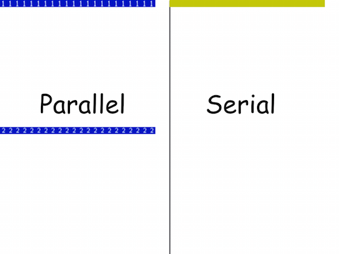
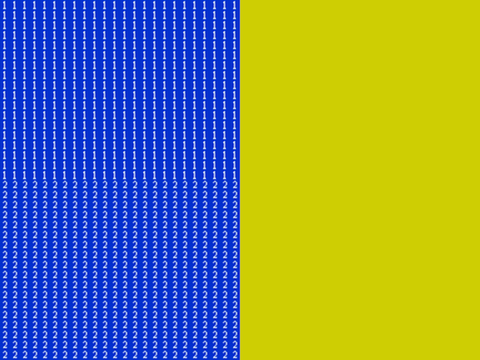

When you put two "When green flag ..." hat blocks in the same sprite, both will run at the same time! Similarly, if multiple sprites all have "When green flag..." hat blocks, these will run concurrently as well.
Open this Snap! file SerialVsParallel, and click the green flag (not the block in the default sprite!). Two things will get drawn:
(Two screenshots are included below) Note that the parallel side finished in exactly half the time of the serial side. Discuss with your partner why this is. You should use the phrase time sharing in your explanation. If you don't remember what that is, go back to the first page of lab, "Snap! Machine Concepts"
First, a screenshot taken during computation.
Second, a screenshot taken after computation has finished.
It is important to form an accurate mental model of the machine/software when working with it. Hopefully you have seen here that Snap! gives equal time to all the workers (scripts), in lock step, and that concurrency bugs can creep up very easily.